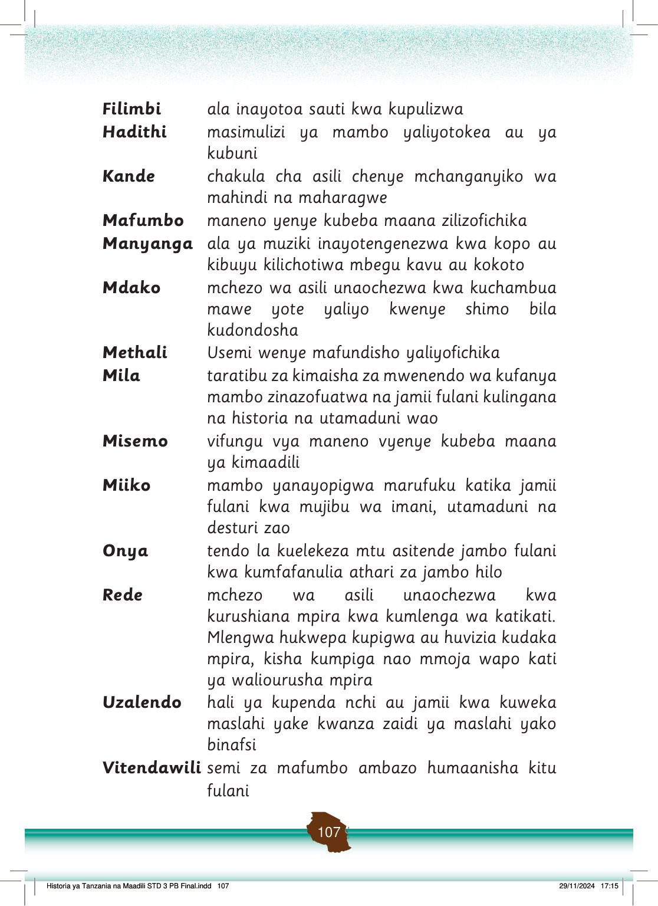

Sura ya saba: Urithi na asili za jamii kwa maendeleo ya sasa.
Urithi na asili za jamii kwa maendeleo ya sasa
Utangulizi wa sura unaeleza umuhimu wa urithi, asili za jamii, na maarifa ya jadi katika maendeleo ya kiuchumi na kijamii ya sasa.
Utangulizi
Katika sura hii utajifunza kuhusu umuhimu wa urithi na asili za jamii na urithi wa kihistoria kwa maendeleo ya kiuchumi na kijamii.
Pia, utajifunza mbinu za kutumia maarifa na ujuzi wa asili katika kuboresha ustawi wa jamii kwa sasa.
Vilevile, utajifunza jinsi ya kusimulia maarifa na ujuzi wa asili, asili za jamii na urithi wa kihistoria katika mazingira ya nyumbani na shuleni.
Mwisho, utajifunza thamani ya asili na urithi wa kihistoria katika jamii inayokuzunguka.
Umahiri utakaoupata katika sura hii utakuwezesha kutumia urithi na asili za jamii kwa maendeleo ya kiuchumi na kijamii kwa sasa.
Fikiri
Urithi na asili za jamii kwa maendeleo ya kiuchumi na kijamii
Umuhimu wa maarifa na ujuzi wa asili na urithi wa kihistoria
Kazi ya kufanya namba 1
Waulize wazazi au walezi umuhimu wa maarifa na ujuzi wa asili na urithi wa kihistoria uliopo katika maeneo yako katika maendeleo ya kiuchumi na kijamii.
Maarifa na ujuzi wa asili na urithi wa kihistoria una umuhimu katika maendeleo ya kijamii na kiuchumi kwa sasa.